Ian Zelikman
- Python dev for 6+ years
- Backend web services
- IBM Watson Health
@izcoder
ian.zelikman@gmail
Motivation
Bug Etymology and History
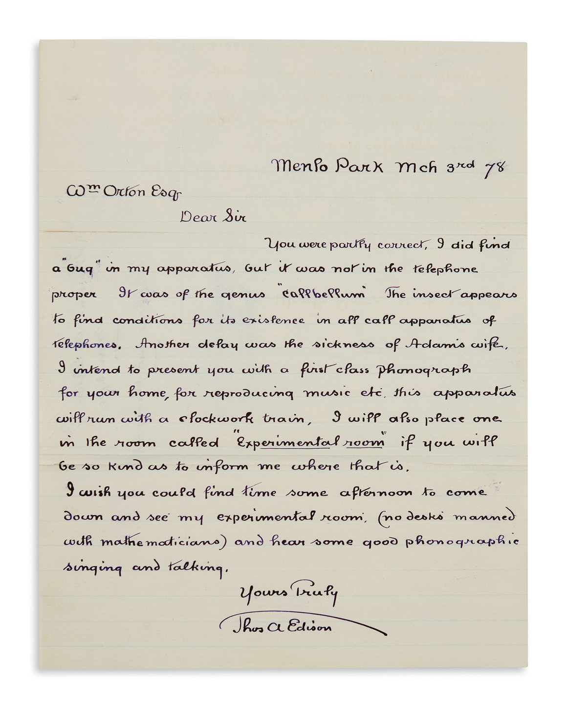First Bug In Software
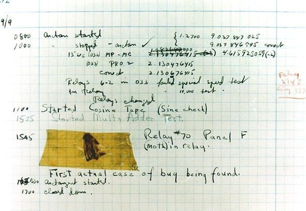Infamous Bugs
Mars Climate Orbiter
Loss Of Contact
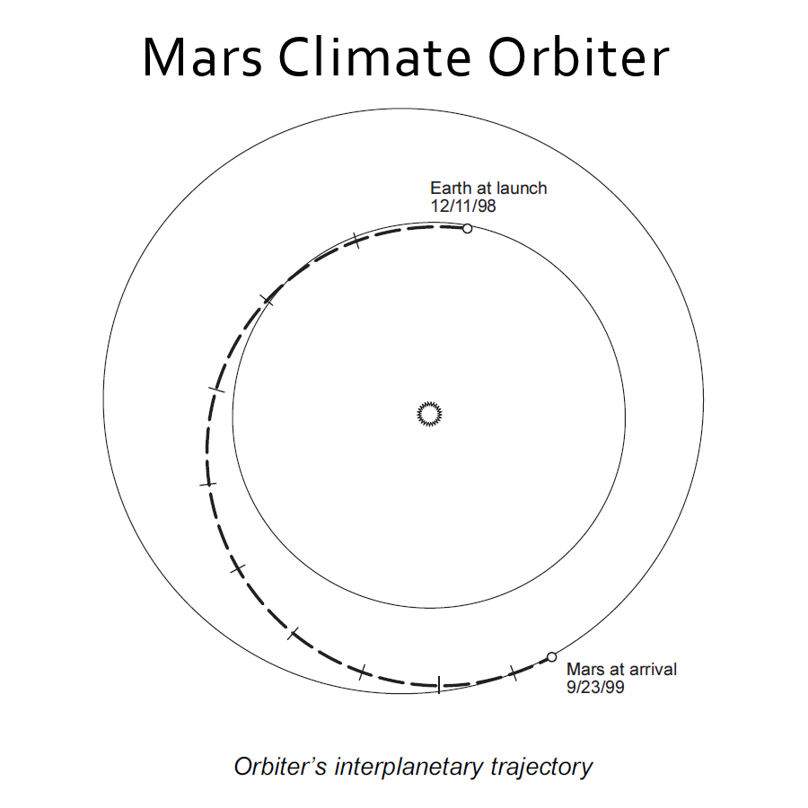 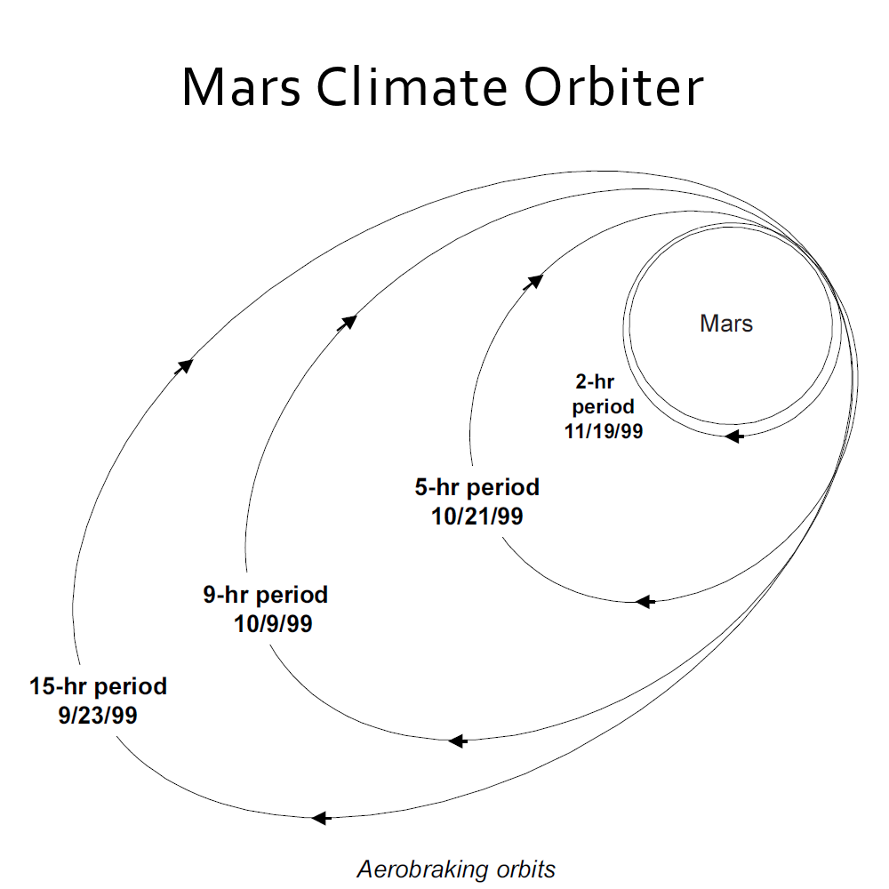The Result
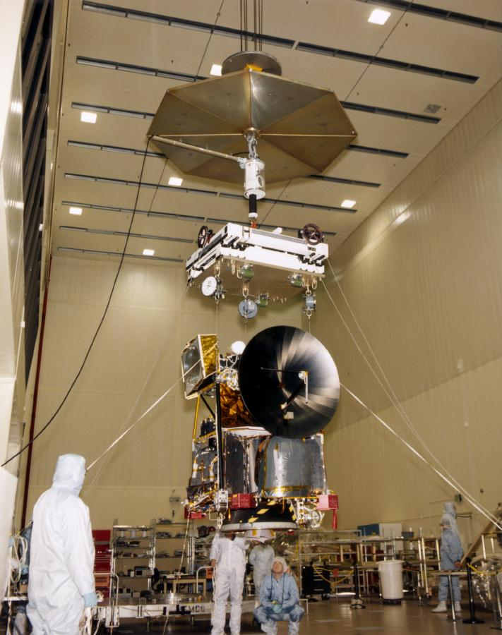 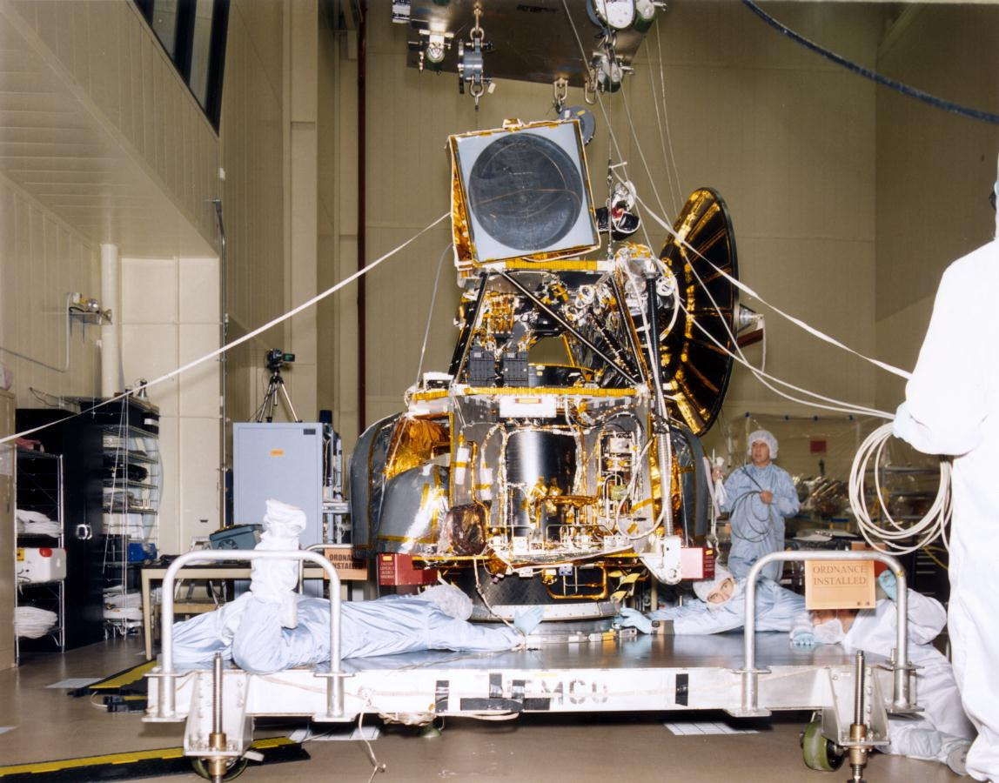Why This Bug
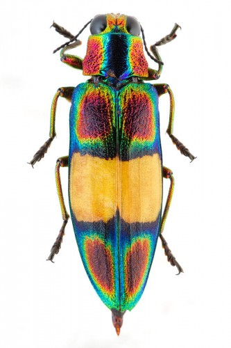Ariane 5 Explosion
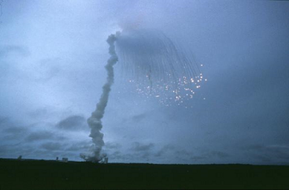Overflow
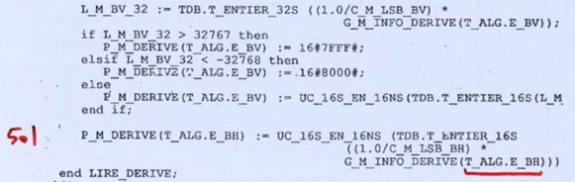The Results
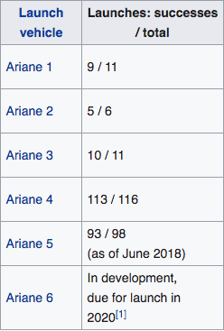Why This Bug
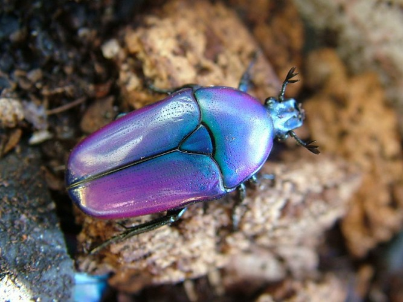AT&T Long Distance
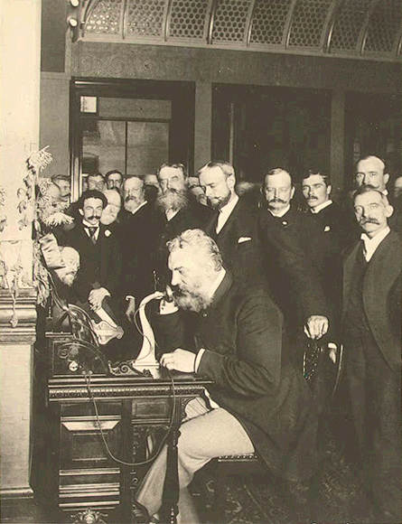Call Waiting...
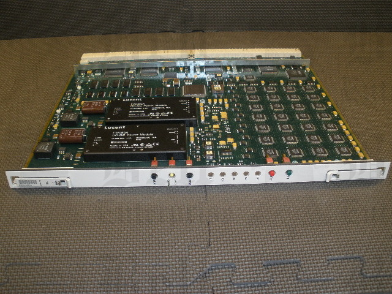The Results
Why This Bug
Patriot System Failure

Failure At Dahhran
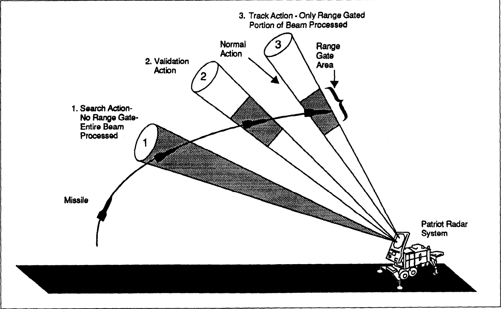 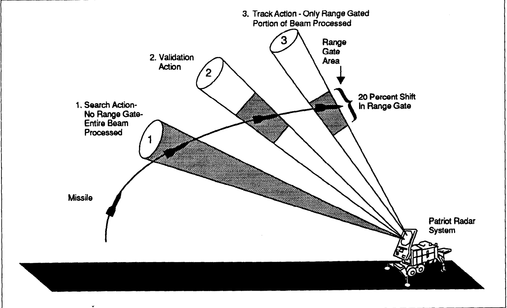 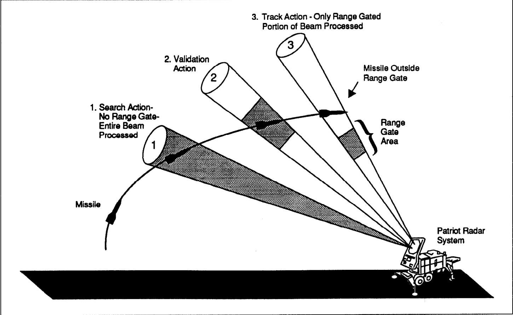The Results
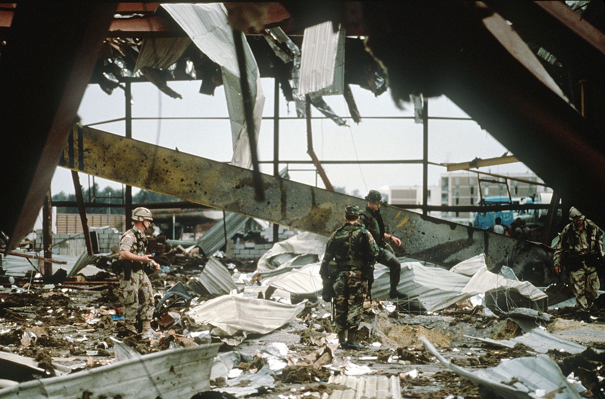Why This Bug
World End 1983
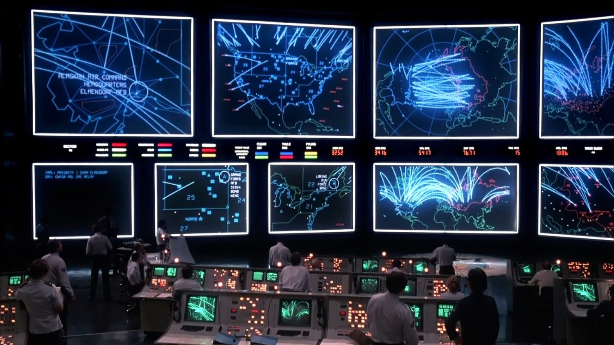False Alarm
The Result
Why This Bug
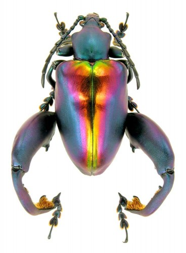Famous Bugs
- What is common to these cases?
- Why are they important?